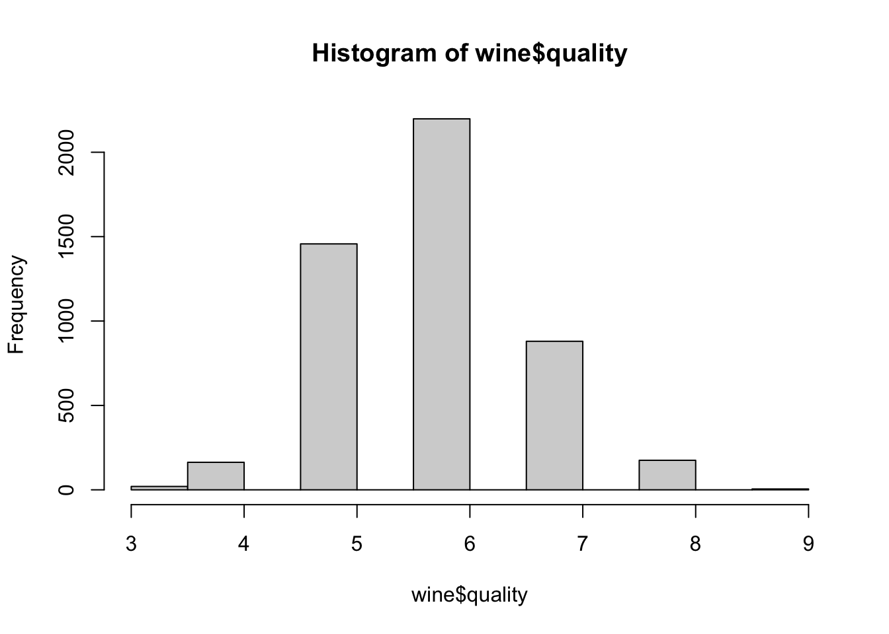
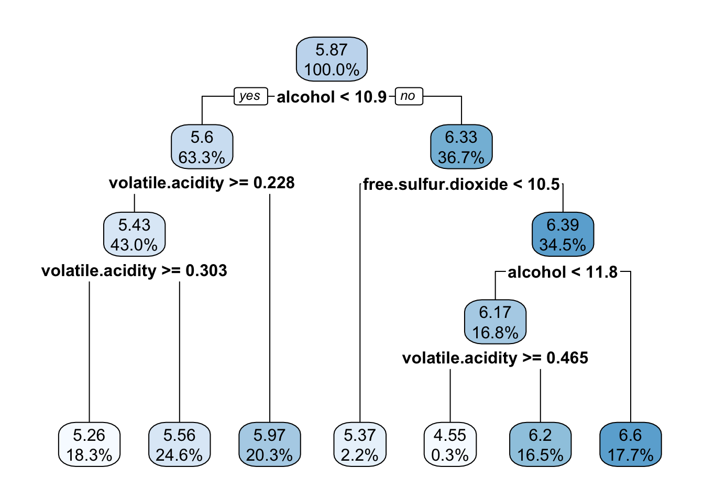
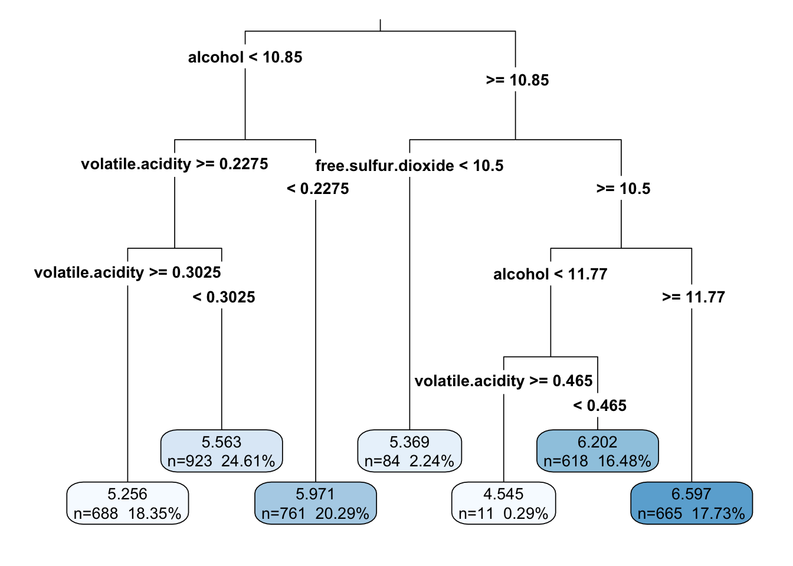

Show the code
wine <- read.csv("whitewines.csv")zsc
2017年2月18日
决策树可用于聚类（类别变量），也可用于数值预测,但是本节只考虑决策树用于数值预测.
决策树用于数值预测可以分为回归树和模型树
回归树: 回归树中并没用使用线性回归的方法，而是基于到达叶节点的案例的平均值做出预测
模型树: 模型树和回归树以大致相同的方式生长，但是在每个叶节点，根据到达该节点的案例建立多元线性回归模型。根据叶节点的数目，一棵模型树可能会建立几十甚至上百个这样的模型，可能会使模型树比同等的回归树更难解释，但好处也行能提高精确度。
| 优点 | 缺点 |
|---|---|
| 将决策树的优点对数值型数据建立模型的能力相结合 | 不像线性回归那么常用 |
| 能自动选择特征，允许该方法与大量特征一起使用 | 需要大量的训练数据 |
| 不需要使用者事先指定模型 | 难以确定单个特征对于结果的总体净影响 |
| 拟合某些类型的数据可能会比线性回归好 | 可能比回归模型难以解释 |
| 不要求用统计的知识来解释模型 |
用于数值预测的决策树的建立方式与用于分类的决策树建立的方式大致相同。从根节点开始，按照特征使用分而治之的决策对数据进行划分，在进行一次分割后，将会导致结果最大化的均匀增长。
常见的一个分割标准成为标准偏差减少(Standard Deciation Reduction,SDR),其公式定义如下\[SDR=sd(T)\]
白葡萄酒包含4898个葡萄酒案例的11种化学特征的信息，对于每种葡萄酒，实验室分析测量的特征包括酸性、含糖量、氯化物含量、硫的含量、酒精度、PH值和密度值
其所有特征都是数值型
wine <- read.csv("whitewines.csv")研究一下结果变量的分布,由于是离散的，可用直方图来研究葡萄酒质量的分布：
hist(wine$quality)
符合正态分布。大约以数值为6为中心(也可用summary()函数发现一些数据的异常值等等)，最后划分训练数据与测试数据(数据是随机排序),75%的训练数据，25%的测试数据
wine_train <- wine[1:3750, ]
wine_test <- wine[3751:4898, ]n= 3750
node), split, n, deviance, yval
* denotes terminal node
1) root 3750 2945.53200 5.870933
2) alcohol< 10.85 2372 1418.86100 5.604975
4) volatile.acidity>=0.2275 1611 821.30730 5.432030
8) volatile.acidity>=0.3025 688 278.97670 5.255814 *
9) volatile.acidity< 0.3025 923 505.04230 5.563380 *
5) volatile.acidity< 0.2275 761 447.36400 5.971091 *
3) alcohol>=10.85 1378 1070.08200 6.328737
6) free.sulfur.dioxide< 10.5 84 95.55952 5.369048 *
7) free.sulfur.dioxide>=10.5 1294 892.13600 6.391036
14) alcohol< 11.76667 629 430.11130 6.173291
28) volatile.acidity>=0.465 11 10.72727 4.545455 *
29) volatile.acidity< 0.465 618 389.71680 6.202265 *
15) alcohol>=11.76667 665 403.99400 6.596992 *对于决策树中的每个节点，到达决策点的案例数量都列出来了，例如：所有的3750个案例从根节点开始，其中
(1)有2372个案例的alcohol< 10.85 2372，
因为alcohol（酒精）是决策树中第一个使用的变量，所以它是葡萄酒质量中唯一最重要的指标。
用* 表示的节点是终端或者叶节点，这意味着他们会产生预测(这里作为yavl列出来)。例如节点5有一个5.971091的yval。当该决策树用来预测时，对任意一个葡萄酒案例，如果alcohol< 10.85 2372 且volatile.acidity< 0.2275，那么它的质量值将预测为5.97
library(rpart.plot)
rpart.plot(m.rpart, digits = 3)#基本决策树图
rpart.plot(m.rpart, digits = 4, fallen.leaves = TRUE, type = 3, extra = 101)#对图表的一些调整
Min. 1st Qu. Median Mean 3rd Qu. Max.
4.545 5.563 5.971 5.893 6.202 6.597 summary(wine_test$quality) Min. 1st Qu. Median Mean 3rd Qu. Max.
3.000 5.000 6.000 5.901 6.000 9.000 这一发现表面，该模型不能正确识别极端的情形，尤其是最好的和最差葡萄酒，反过来，另一方面，在第一四分位数和第三四分位数之间，我们可能做的不错。
平均绝对误差:考虑它的预测值离真实值有多远，方程如下：\[MAE=1/n\]
由于误差是预测值与真实值之间的差值，所以可以简单创建一个MSE()函数，如下：
[1] 0.5872652就平均而言，这意味着模型的预测值与真实值的质量分数之间的差值大约为0.59，基于质量的尺度是从0~10，这似乎表面我们的模型做的还可以
另一反面，大多数的葡萄酒既不是很好也不是很差，通常情况下，质量分数大约为5~6.因此根据这个指标，一个什么都没有做而是仅仅预测了均值的分类器可能同样会做的相当好（意思是直接为均值===相当于这个模型了）
训练数据中的平均质量等级如下：（用平均值试试）
回归树(MSE=0.59)比估算的均值(MSE=0.67)平均更接近于真实的质量分数，但相差不大,所以模型需要改进
模型树算法为M5算法—改进以后为M5’算法 M5‘算法在R中通过Rweka包和M5P()函数可以得到
library(RWeka)#调用的时候需要联网,还要安装该软件
##############
#### make_Weka_package_loader("lazyBayesianRules") #加载weka相关的包
#### list_Weka_interfaces() #列出weka中可以调用的函数，不够的话可以下载
#### WPM("list-packages", "installed")
#### WPM("list-packages", "available")
######################################
# 应该是Rweka中默认没有这个函数，需要自己安装以后调用
#好像在这里调用的时候，要安装weka
## 调用方法cbind(d,iris[,5])
#LBR=make_Weka_classifier("weka/classifiers/lazy/LBR")
#a=LBR(Species~., data=iris)
#RF <-make_Weka_classifier("weka/classifiers/trees/RandomForest")
# a=RF(Species~., data=iris)
###############################
####
M5P <- make_Weka_classifier("weka/classifiers/trees/M5P")#必须调用
m.m5p <- M5P(quality~., data = wine_train)
# 画树图
m.m5p这里的分割与前面的回归树很相似，然而关键的区别在于节点不是以一个数值预测终止，而是以一个线性模型终止（这里表示为LM1和LM2）
线性模型本身显示在输出后面，例如LM1模型如下，这些值完全可以和多元模型一样解释，每一个数字都是相关特征对于预测的葡萄酒质量的净影响（效应）。对于固定酸度系数0.266意味着每增加一个单位的酸度，葡萄酒的质量预计会增加0.266
注意的是，估计的影响只适用于到达该节点的葡萄酒案例。在这个模型树中一共建立了36个线性回归模型，每一个模型对于固定的酸度和其他10个特征的影响都有不同的估计
对于预测数据来说：
R version 4.2.1 (2022-06-23)
Platform: aarch64-apple-darwin20 (64-bit)
Running under: macOS Monterey 12.5.1
Matrix products: default
BLAS: /Library/Frameworks/R.framework/Versions/4.2-arm64/Resources/lib/libRblas.0.dylib
LAPACK: /Library/Frameworks/R.framework/Versions/4.2-arm64/Resources/lib/libRlapack.dylib
locale:
[1] en_US.UTF-8/en_US.UTF-8/en_US.UTF-8/C/en_US.UTF-8/en_US.UTF-8
attached base packages:
[1] stats graphics grDevices utils datasets methods base
other attached packages:
[1] rpart.plot_3.1.1 rpart_4.1.16
loaded via a namespace (and not attached):
[1] digest_0.6.29 jsonlite_1.8.0 magrittr_2.0.3 evaluate_0.16
[5] rlang_1.0.4 stringi_1.7.8 cli_3.3.0 rstudioapi_0.14
[9] rmarkdown_2.16.1 tools_4.2.1 stringr_1.4.1 htmlwidgets_1.5.4
[13] xfun_0.32 yaml_2.3.5 fastmap_1.1.0 compiler_4.2.1
[17] htmltools_0.5.3 knitr_1.40 ---
title: 回归树与模型树
date: '2017-02-18'
categories: r
---
```{r setup, include=FALSE}
knitr::opts_chunk$set(message=FALSE, warning=FALSE)
```
## 1、理解回归树与模型树
决策树可用于聚类（类别变量），也可用于数值预测,但是本节只考虑决策树用于数值预测.
**决策树用于数值预测**可以分为**回归树**和**模型树**
1. **回归树**: 回归树中并没用使用线性回归的方法，而是基于到达叶节点的案例的平均值做出预测
2. **模型树**: 模型树和回归树以大致相同的方式生长，但是在每个叶节点，根据到达该节点的案例建立多元线性回归模型。根据叶节点的数目，一棵模型树可能会建立几十甚至上百个这样的模型，可能会使模型树比同等的回归树更难解释，但好处也行能提高精确度。
## 2、回归树与模型树的优缺点
| 优点 | 缺点 |
| ----------------------- | ------------------ |
| 将决策树的优点对数值型数据建立模型的能力相结合 | 不像线性回归那么常用 |
| 能自动选择特征，允许该方法与大量特征一起使用 | 需要大量的训练数据 |
| 不需要使用者事先指定模型 | 难以确定单个特征对于结果的总体净影响 |
| 拟合某些类型的数据可能会比线性回归好 | 可能比回归模型难以解释 |
| 不要求用统计的知识来解释模型 | |
用于数值预测的决策树的建立方式与用于分类的决策树建立的方式大致相同。从根节点开始，按照特征使用分而治之的决策对数据进行划分，在进行一次分割后，将会导致结果最大化的均匀增长。
1. **在分类决策树中，一致性(均匀性)是有熵值度量** ，而对于数值型数据是未定义的，
2. **对于数值型决策，一致性(均匀性)可通过统计量(方差、标准差、平均绝对偏差)来度量**,根据使用的决策树生长算法，度量方法可能用所不同，但基本原理相同.
常见的一个分割标准成为**标准偏差减少(Standard Deciation Reduction,SDR)**,其公式定义如下$$SDR=sd(T)$$
## 3、例子-------估计葡萄酒的质量
白葡萄酒包含4898个葡萄酒案例的11种化学特征的信息，对于每种葡萄酒，实验室分析测量的特征包括酸性、含糖量、氯化物含量、硫的含量、酒精度、PH值和密度值
#### 3.1读入数据
其所有特征都是数值型
```{r}
wine <- read.csv("whitewines.csv")
```
研究一下结果变量的分布,由于是离散的，可用直方图来研究葡萄酒质量的分布：
```{r}
hist(wine$quality)
```
符合正态分布。大约以数值为6为中心(也可用summary()函数发现一些数据的异常值等等)，最后划分训练数据与测试数据(数据是随机排序),75%的训练数据，25%的测试数据
```{r}
wine_train <- wine[1:3750, ]
wine_test <- wine[3751:4898, ]
```
#### 3.2基于数据训练模型----回归树
```{r}
library(rpart)
m.rpart <- rpart(quality ~ ., data = wine_train)
m.rpart# 获取该树的基本信息,#summary(m.rpart)
```
对于决策树中的每个节点，到达决策点的案例数量都列出来了，例如：所有的3750个案例从根节点开始，其中
- (1)有2372个案例的alcohol< 10.85 2372，
- (2) 1378个案例的 alcohol>=10.85 。
因为alcohol（酒精）是决策树中第一个使用的变量，所以它是葡萄酒质量中唯一最重要的指标。
用* 表示的节点是终端或者叶节点，这意味着他们会产生预测(这里作为yavl列出来)。例如节点5有一个5.971091的yval。当该决策树用来预测时，对任意一个葡萄酒案例，如果alcohol< 10.85 2372 且volatile.acidity< 0.2275，那么它的质量值将预测为5.97
#### 3.3可视化决策时
```{r}
library(rpart.plot)
rpart.plot(m.rpart, digits = 3)#基本决策树图
rpart.plot(m.rpart, digits = 4, fallen.leaves = TRUE, type = 3, extra = 101)#对图表的一些调整
```
#### 3.4评估模型的性能
```{r}
p.rpart <- predict(m.rpart, wine_test)
#我们预测的主要统计量表明了一个潜在的问题，预测值与真实值相比落在一个更窄的范围内
summary(p.rpart)
summary(wine_test$quality)
```
这一发现表面，该模型不能正确识别极端的情形，尤其是最好的和最差葡萄酒，反过来，另一方面，在第一四分位数和第三四分位数之间，我们可能做的不错。
#### 3.5用平均绝对误差度量性能
**平均绝对误差:**考虑它的预测值离真实值有多远，方程如下：$$MAE=1/n$$
由于误差是预测值与真实值之间的差值，所以可以简单创建一个MSE()函数，如下：
```{r}
MAE <- function(actual, predicted) {
mean(abs(actual - predicted))
}
# 预测值和实际值之间的平均绝对误差
MAE(p.rpart, wine_test$quality)#MAS越小越好
```
就平均而言，这意味着模型的预测值与真实值的质量分数之间的差值大约为0.59，基于质量的尺度是从0~10，这似乎表面我们的模型做的还可以
另一反面，大多数的葡萄酒既不是很好也不是很差，通常情况下，质量分数大约为5~6.因此根据这个指标，一个什么都没有做而是仅仅预测了均值的分类器可能同样会做的相当好（意思是直接为均值===相当于这个模型了）
训练数据中的平均质量等级如下：（用平均值试试）
```{r}
# result = 5.87平均值
mean(wine_train$quality)
#如果我们对一个葡萄酒案例预测的值为5.87，那么我们将只有大约0.67的平均绝对误差
#mean_abserror(5.87, wine_test$quality)
mean(abs(rep(5.87,length(wine_test$quality))-wine_test$quality))#平均值的MAE为0.67
```
回归树(MSE=0.59)比估算的均值(MSE=0.67)平均更接近于真实的质量分数，但相差不大,所以模型需要改进
## 3.6提高模型的性能----模型树（改进模型）
模型树算法为M5算法---改进以后为M5’算法
M5‘算法在R中通过Rweka包和M5P()函数可以得到
```{r,eval=FALSE}
library(RWeka)#调用的时候需要联网,还要安装该软件
##############
#### make_Weka_package_loader("lazyBayesianRules") #加载weka相关的包
#### list_Weka_interfaces() #列出weka中可以调用的函数，不够的话可以下载
#### WPM("list-packages", "installed")
#### WPM("list-packages", "available")
######################################
# 应该是Rweka中默认没有这个函数，需要自己安装以后调用
#好像在这里调用的时候，要安装weka
## 调用方法cbind(d,iris[,5])
#LBR=make_Weka_classifier("weka/classifiers/lazy/LBR")
#a=LBR(Species~., data=iris)
#RF <-make_Weka_classifier("weka/classifiers/trees/RandomForest")
# a=RF(Species~., data=iris)
###############################
####
M5P <- make_Weka_classifier("weka/classifiers/trees/M5P")#必须调用
m.m5p <- M5P(quality~., data = wine_train)
# 画树图
m.m5p
```
这里的分割与前面的回归树很相似，然而**关键的区别在于节点不是以一个数值预测终止，而是以一个线性模型终止**（这里表示为LM1和LM2）
线性模型本身显示在输出后面，例如LM1模型如下，这些值完全可以和多元模型一样解释，每一个数字都是相关特征对于预测的葡萄酒质量的净影响（效应）。对于固定酸度系数0.266意味着每增加一个单位的酸度，葡萄酒的质量预计会增加0.266
注意的是，估计的影响只适用于到达该节点的葡萄酒案例。在这个模型树中一共建立了36个线性回归模型，每一个模型对于固定的酸度和其他10个特征的影响都有不同的估计
对于预测数据来说：
```{r,eval=FALSE}
# 生成模型的预测
p.m5p <- predict(m.m5p, wine_test)
# 模型树的预测返回比回归树的广
summary(p.m5p)
#模型的MSE也有改善
MAE(wine_test$quality, p.m5p)
```
```{r}
sessionInfo()
```